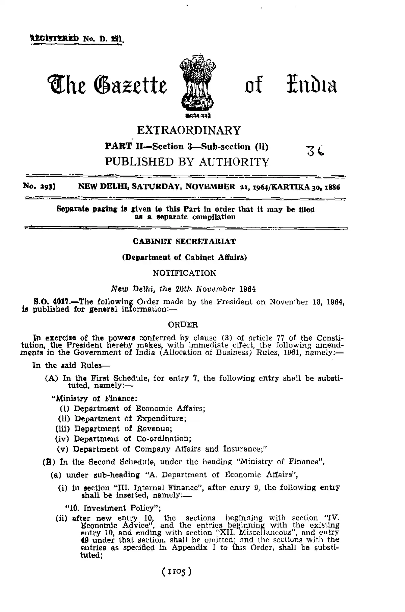
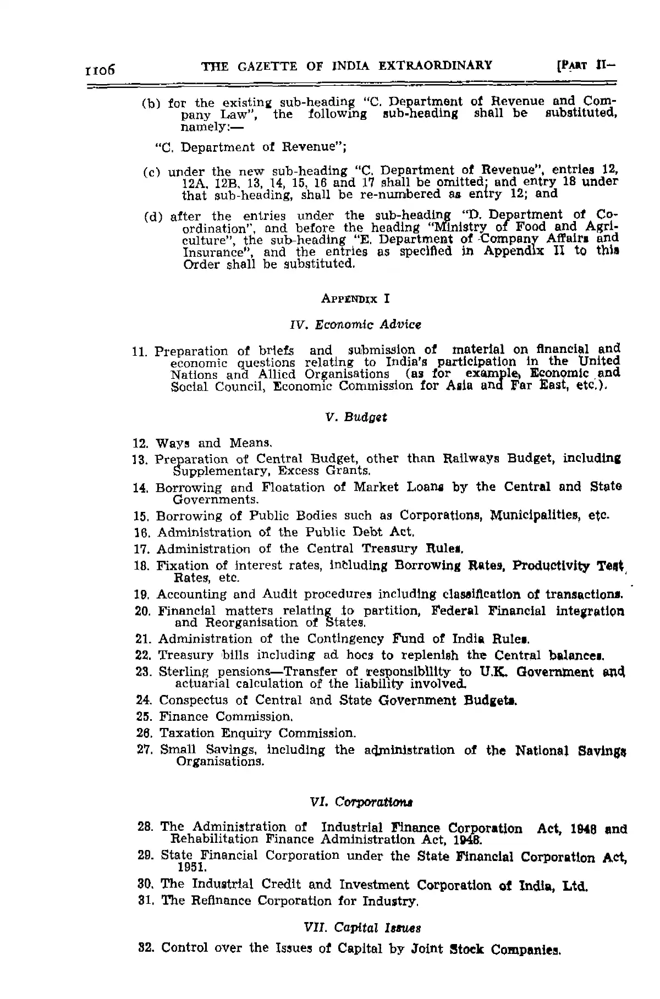
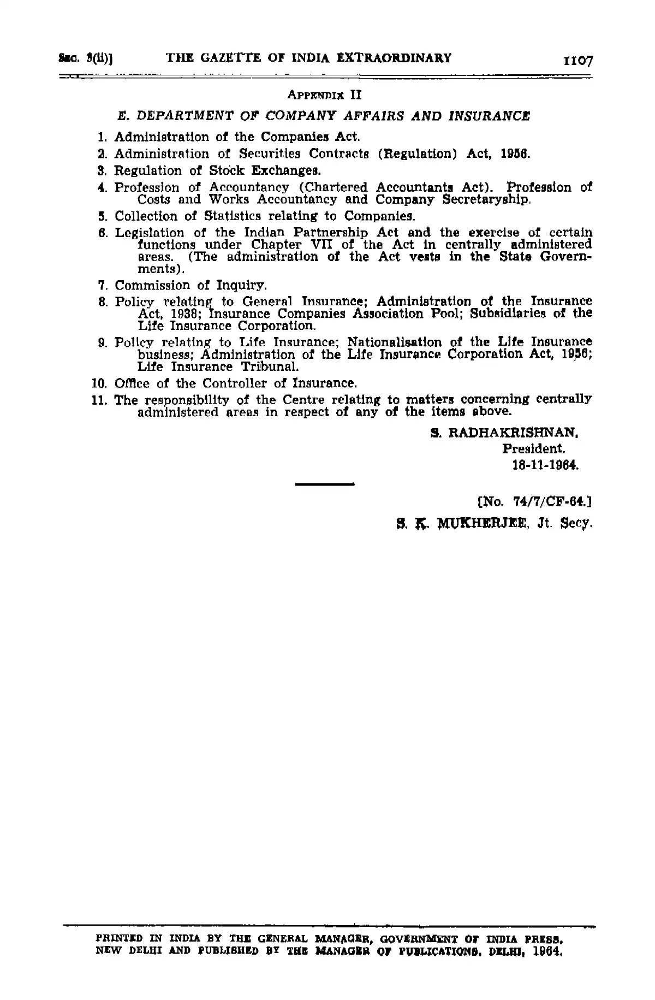

Amendment #36 (S.O.4017, 1964)
7 changes: 1 to the First Schedule, 6 to the Second Schedule. 7 applied
The order, page by page
Page 1 of 4

123Schedule 1 › entry 7
- Ministry of Finance:
- i. Department of Economic Affairs
- ii. Department of Expenditure
- iii. Department of Revenue
- iv. Department of Co-ordination
- v. Department of Company Affairs and Insurance
applied at schedule 1 › ministry 7 in the Rules after #36
states inferred number kept
after Schedule 2 › Ministry of Finance › Department of Economic Affairs › III. Internal Finance › entry 9
- 10. Investment Policy
applied at schedule 2 › ministry MINISTRY OF FINANCE › department A › group_heading III › entry 10 in the Rules after #36
Schedule 2 › Ministry of Finance › Department of Economic Affairs › entry
- IV. Economic Advice
- 11. Preparation of briefs and submission of material on financial and economic questions relating to India's participation in the United Nations and Allied Organisations (as for example, Economic and Social Council, Economic Commission for Asia and Far East, etc.).
- V. Budget
- 12. Ways and Means.
- 13. Preparation of Central Budget, other than Railways Budget, including Supplementary, Excess Grants.
- 14. Borrowing and Floatation of Market Loans by the Central and State Governments.
and 21 more
- 15. Borrowing of Public Bodies such as Corporations, Municipalities, etc.
- 16. Administration of the Public Debt Act.
- 17. Administration of the Central Treasury Rules
- 18. Fixation of interest rates, including Borrowing Rates, Productivity Test Rates, etc.
- 19. Accounting and Audit procedures including classification of transactions.
- 20. Financial matters relating to partition, Federal Financial integration and Reorganisation of States.
- 21. Administration of the Contingency Fund of India Rules.
- 22. Treasury bills including ad hocs to replenish the Central balances.
- 23. Sterling pensions Transfer of responsibility to U.K. Government and actuarial calculation of the liability involved.
- 24. Conspectus of Central and State Government Budgets.
- 25. Finance Commission.
- 26. Taxation Enquiry Commission.
- 27. Small Savings, including the administration of the National Savings Organisations.
- VI. Corporations
- 28. The Administration of Industrial Finance Corporation Act, 1948 and Rehabilitation Finance Administration Act, 1948.
- 29. State Financial Corporation under the State Financial Corporation Act
- 1951.
- 30. The Industrial Credit and Investment Corporation of India, Ltd.
- 31. The Refinance Corporation for Industry.
- VII. Capital Issues
- 32. Control over the Issues of Capital by Joint Stock Companies.
applied at schedule 2 › ministry MINISTRY OF FINANCE › department A › group_heading III › entry 10 in the Rules after #36
Page 2 of 4

4567Schedule 2 › Ministry of Finance › Department of Revenue and Company Law
- C. Department of Revenue
applied at schedule 2 › ministry MINISTRY OF FINANCE › department C in the Rules after #36
read hindi missing
Schedule 2 › Ministry of Finance › Department of Revenue › entry 12; Schedule 2 › Ministry of Finance › Department of Revenue › entry 12A; Schedule 2 › Ministry of Finance › Department of Revenue › entry 12B; Schedule 2 › Ministry of Finance › Department of Revenue › entry 13; Schedule 2 › Ministry of Finance › Department of Revenue › entry 14; Schedule 2 › Ministry of Finance › Department of Revenue › entry 15; Schedule 2 › Ministry of Finance › Department of Revenue › entry 16; Schedule 2 › Ministry of Finance › Department of Revenue › entry 17
applied at schedule 2 › ministry MINISTRY OF FINANCE › department C › entry 12 in the Rules after #36
Schedule 2 › Ministry of Finance › Department of Revenue › entry 18
renumbered as 12
applied at schedule 2 › ministry MINISTRY OF FINANCE › department C › entry 12 in the Rules after #36
after Schedule 2 › Ministry of Finance › Department of Co-ordination
- E. DEPARTMENT OF COmpany affairs and INSURANCE
- 1. Administration of the Companies Act.
- 2. Administration of Securities Contracts (Regulation) Act, 1958.
- 3. Regulation of Stock Exchanges.
- 4. Profession of Accountancy (Chartered Accountants Act). Profession of Costs and Works Accountancy and Company Secretaryship.
- 5. Collection of Statistics relating to Companies.
and 6 more
- 6. Legislation of the Indian Partnership Act and the exercise of certain functions_under Chapter VII of the Act in centrally administered areas. (The administration of the Act vests in the State Governments).
- 7. Commission of Inquiry.
- 8. Policy relating to General Insurance; Administration of the Insurance Act, 1988; Insurance Companies Association Pool; Subsidiaries of the Life Insurance Corporation.
- 9. Policy relating to Life Insurance; Nationalisation of the Life Insurance business; Administration of the Life Insurance Corporation Act, 1956 Life Insurance Tribunal.
- 10. Office of the Controller of Insurance.
- 11. The responsibility of the Centre relating to matters concerning centrally administered areas in respect of any of the items above.
applied at schedule 2 › ministry MINISTRY OF FINANCE › department E in the Rules after #36
read hindi missing
Page 3 of 4

Page 4 of 4
How this document was read
Edits to the reading
| Date | By | Edit | Before → after |
|---|---|---|---|
| 12 November 2026 | claude | word corrected |
Changes placed by an inference rule
| Change | Rule | Status | What |
|---|---|---|---|
| 1 | number_kept | accepted | change 1: schedule 1 › ministry Ministry of Finance: keeps its number 7, the heading put for it quoted without one |
From the Government of India (Allocation of Business) Rules, 1961 and their amendments, as published by the Cabinet Secretariat (cabsec.gov.in), read by orgpedia. The readings of the older scanned gazettes have known gaps.